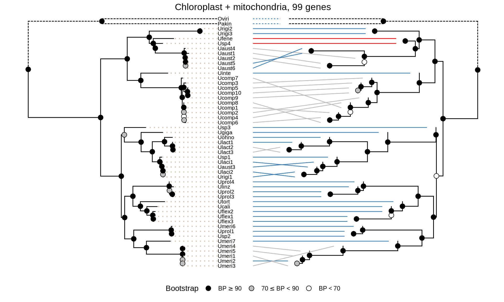
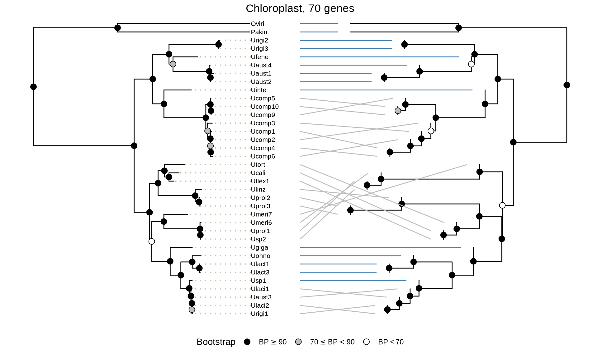
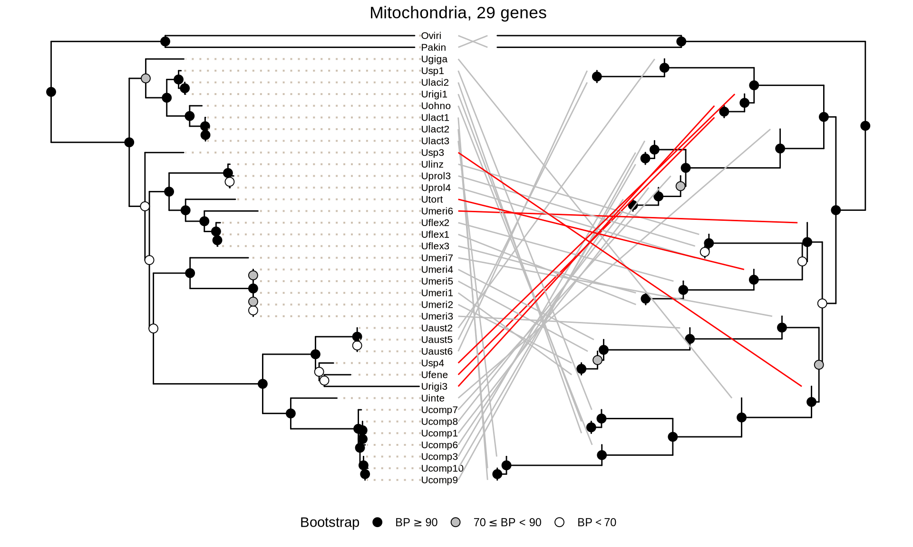
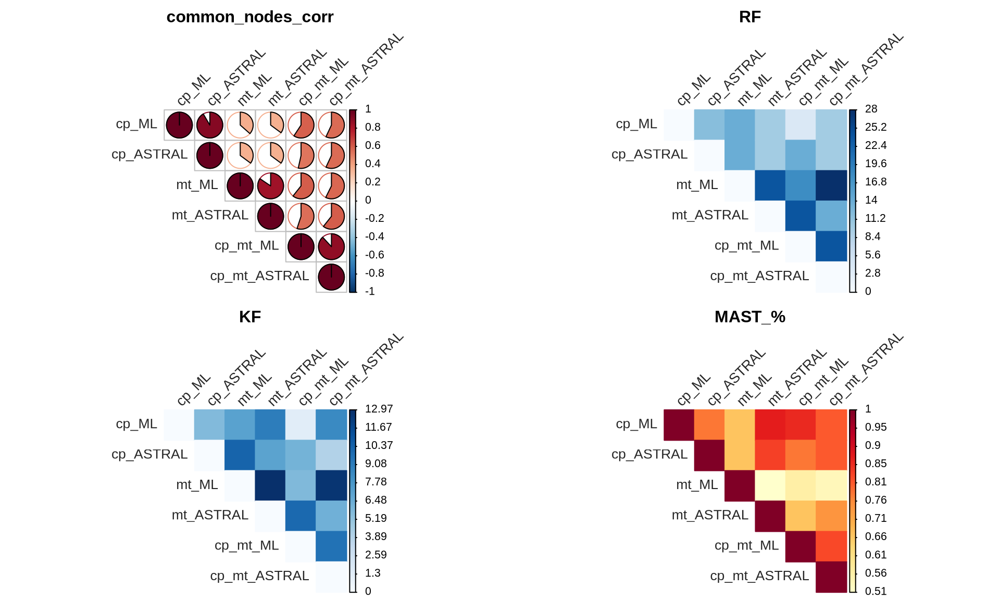
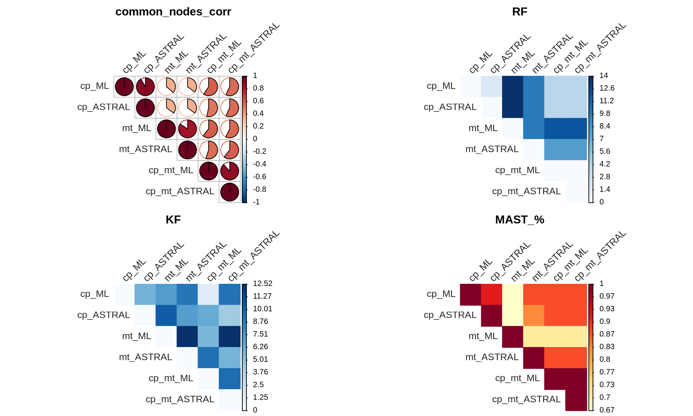

2 Species tree reconstruction from organellar genomes
2.1 On this page
Biological insights and take-home messages are at the bottom of the page at Lesson Learnt: Section 2.3.
- Here we reconstruct the Ulva species tree based on the 70 chloroplast and 29 mitochondrial genes we have retrieved using two methods: a Maximum Likelihood method and a coalescence-based one;
- we compare the species trees reconstructed by using only chloroplast genes or only mitochondrial genes against the Ulva species tree obtained with all 99 organellar genes.
2.2 Reconstruction of Ulva species tree
We will reconstruct the Ulva phylogenetic species tree using a Maximum Likelihood approach with IQ-TREE, and a coalescence-based one with ASTRAL. We will generate the species tree based on:
- chloroplast only genes
- mitochondrial only genes
- both chloroplast and mitochondrial genes
and we will evaluate the similarities and differences between the reconstructed phylogenies.
2.2.1 Maximum Likelihodd species tree reconstruction
For the ML approach, the first step consist in concatenating all alignments into a single concatenated file. We will use catfasta2phyml to concatenate the nucleotidic sequences.
However, we want to apply different evolution models to different genes. Even if for each organelle all genes are inherited in linkage, the same is not true for the chloroplast and the mitochondrial genome. Moreover, this would allow to model different signals across genes that are under different evolutionary pressures. Therefore, first we run single-gene ML trees for each of the 99 genes, and for that gene we detect which evolution model result the Maximum Likelihood reconstruction. Then, we use that model to generate a nexus file for the concatenated alignment that we will provide to IQ-TREE to assign the best model for each partition (gene).
Let’s start by running the ML tree reconstruction for each single organellar gene.
#!/usr/bin/env bash
# CP gene wise Maximum Likelihood phylogeny
mkdir ./03_cp_singleGene_ML && cd ./03_cp_singleGene_ML
ls ../02_cp_CDS_align/*.fa \
| xargs -P 8 -n 6 -I {} bash -c \
‘~/bin/iqtree-2.2.0-Linux/bin/iqtree2 -s {} \
-st DNA \
-pre $(basename {} .fa)
-nt 6 \
-wbt -bb 1000 -alrt 1000 \
-m MFP+MERGE’
# MT gene wise Maximum Likelihood phylogeny
cd ..
mkdir ./03_mt_singleGene_ML && cd ./03_mt_singleGene_ML
ls ../02_mt_CDS_align/*.fa \
| xargs -P 8 -n 6 -I {} bash -c \
‘~/bin/iqtree-2.2.0-Linux/bin/iqtree2 -s {} \
-st DNA \
-pre $(basename {} .fa)
-nt 6 \
-wbt -bb 1000 -alrt 1000 \
-m MFP+MERGE’
cd ..Now we can create a nexus file with the best model predicted for each gene. This provides the best model for each partition (i.e.: gene) for the concatenated ML tree.
#!/usr/bin/env bash
# create nexus file with best models CP and MT
for ORGANEL in cp mt; do
k=1
START=0
echo "#nexus" > ./04_"${ORGANEL}"_concat_ML/head_noscaffold.nex
echo "begin sets;" >> ./04_"${ORGANEL}"_concat_ML/head_noscaffold.nex
echo -n "charpartition mine = " >> ./04_"${ORGANEL}"_concat_ML/tail_noscaffold.nex
for file in ./02_"${ORGANEL}"_CDS_alin/*.fa; do
LEN=$(awk '/^>/ {if (seqlen){print seqlen}; print ;seqlen=0;next; } { seqlen += length($0)}END{print seqlen}' $file | sed -n 2,2p)
echo "charset part$k = $(($START+1))-$(($START+$LEN));" >> ./04_"${ORGANEL}"_concat_ML/head_noscaffold.nex
START=$(($START+$LEN))
MODEL=$(grep "Best-fit model" ./02_"${ORGANEL}"_CDS_alin/$(basename $file .fa).log \
| sed 's/Best-fit model: //g' \
| sed 's/ chosen according to BIC//g')
echo -n "$MODEL:part$k ," >> ./04_"${ORGANEL}"_concat_ML/tail_noscaffold.nex
k=$((k+1))
done
echo ";" >> ./04_"${ORGANEL}"_concat_ML/tail_noscaffold.nex
echo "end;" >> ./04_"${ORGANEL}"_concat_ML/tail_noscaffold.nex
cat ./04_"${ORGANEL}"_concat_ML/head_noscaffold.nex \
./04_"${ORGANEL}"_concat_ML/tail_noscaffold.nex \
> ./04_"${ORGANEL}"_concat_ML/"${ORGANEL}"_allgenes_concat.nex
rm ./04_"${ORGANEL}"_concat_ML/head_noscaffold.nex ./04_"${ORGANEL}"_concat_ML/tail_noscaffold.nex
sed -i 's/ ,;/;/g' ./04_"${ORGANEL}"_concat_ML/"${ORGANEL}"_allgenes_concat.nex
done
# create a nexus file for CP+MT concatenated alignment
k=1
START=0
echo "#nexus" > ./06_cp_mt_concat_ML/head_noscaffold.nex
echo "begin sets;" >> ./06_cp_mt_concat_ML/head_noscaffold.nex
echo -n "charpartition mine = " >> ./06_cp_mt_concat_ML/tail_noscaffold.nex
for file in ./02_cp_CDS_alin/*.fa ./02_mt_CDS_alin/*.fa; do
LEN=$(awk '/^>/ {if (seqlen){print seqlen}; print ;seqlen=0;next; } { seqlen += length($0)}END{print seqlen}' $file | sed -n 2,2p)
echo "charset part$k = $(($START+1))-$(($START+$LEN));" >> ./06_cp_mt_concat_ML/head_noscaffold.nex
START=$(($START+$LEN))
MODEL=$(grep "Best-fit model" ./02_*_CDS_alin/$(basename $file .fa).log \
| sed 's/Best-fit model: //g' \
| sed 's/ chosen according to BIC//g')
echo -n "$MODEL:part$k ," >> ./06_cp_mt_concat_ML/tail_noscaffold.nex
k=$((k+1))
done
echo ";" >> ./06_cp_mt_concat_ML/tail_noscaffold.nex
echo "end;" >> ./06_cp_mt_concat_ML/tail_noscaffold.nex
cat ./06_cp_mt_concat_ML/head_noscaffold.nex \
./06_cp_mt_concat_ML/tail_noscaffold.nex \
> ./06_cp_mt_concat_ML/cp_mt_allgenes_concat.nex
rm ./06_cp_mt_concat_ML/head_noscaffold.nex ./06_cp_mt_concat_ML/tail_noscaffold.nex
sed -i 's/ ,;/;/g' ./06_cp_mt_concat_ML/cp_mt_allgenes_concat.nexNow, we will use catfasta2phyml to concatenate the nucleotidic sequences.
#!/usr/bin/env bash
# concatenate CP alignments
perl ~/bin/catfasta2phyml.pl \
--fasta \
--concatenate 02_cp_CDS_align/*.fa \
> 08_concatenated_ML/clstr.all.concat.nt.align.fa
# concatenate MT alignments
perl ~/bin/catfasta2phyml.pl \
--fasta \
--concatenate 02_mt_CDS_align/*.fa \
> 08_concatenated_ML/clstr.all.concat.nt.align.fa
# concatenate CP+MT alignments
perl ~/bin/catfasta2phyml.pl \
--fasta \
--concatenate 07_nt_aln_ready/*.fa \
> 06_cp_mt_concat_ML/clstr.all.concat.nt.align.fa
# ML analysis on concatenated alignment
cd ./04_cp_concat_ML/
~/bin/iqtree-2.2.0-Linux/bin/iqtree2 \
-s cp_allgenes_concat.fa \
-st DNA \
-pre cp_allgenes_concat \
-p cp_allgenes_concat.nex \
--sampling GENESITE \
-nt 64 \
-wbt -bb 1000 -alrt 1000
cd ../04_mt_concat_ML/
~/bin/iqtree-2.2.0-Linux/bin/iqtree2 \
-s mt_allgenes_concat.fa \
-st DNA \
-pre mt_allgenes_concat \
-p mt_allgenes_concat.nex \
--sampling GENESITE \
-nt 64 \
-wbt -bb 1000 -alrt 1000
cd ../06_cp_mt_concat_ML/
~/bin/iqtree-2.2.0-Linux/bin/iqtree2 \
-s cp_mt_allgenes_concat.fa \
-st DNA \
-pre cp_mt_allgenes_concat \
-p cp_mt_allgenes_concat.nex \
--sampling GENESITE \
-nt 64 \
-wbt -bb 1000 -alrt 1000
2.2.2 Colescence-based species tree reconstruction
For the coalescence-based approach, we will reconciliate the single-gene ML tree. We will feed to the coalescence model also all the 1000 Bootstrap trees generate for each ML gene reconstruction, and we will allow for 100 gene resampling to improve the support value at the branch level for the reconstructed species tree.
#!/usr/bin/env bash
# prepare files
cat 03_cp_singleGene_ML/*.contree > 05_cp_ASTRAL/cp_genetrees.tre
cat 03_mt_singleGene_ML/*.contree > 05_mt_ASTRAL/mt_genetrees.tre
cat 03_cp_singleGene_ML/*.contree 03_mt_singleGene_ML/*.contree > 07_cp_mt_ASTRAL/cp_mt_genetrees.tre
for file in 03_cp_singleGene_ML/*.ufboot; do
echo $file | sed ‘s#^#03_cp_singleGene_ML/#’;
done > 05_cp_ASTRAL/cp_bootstrap_trees.BS
for file in 03_mt_singleGene_ML/*.ufboot; do
echo $file | sed ‘s#^#03_mt_singleGene_ML/#’;
done > 05_mt_ASTRAL/mt_bootstrap_trees.BS
for file in 03_cp_singleGene_ML/*.ufboot 03_mt_singleGene_ML/*.ufboot; do
echo $file | sed ‘s#^#03_cp_singleGene_ML/#’ | sed ‘s#^#03_mt_singleGene_ML/#’;
done > 07_cp_mt_ASTRAL/cp_mt_bootstrap_trees.BS
# rum cp coalescence-based tree
java -Xmx24000M \
-jar bin/Astral/astral.5.7.8.jar \
--bootstraps 05_cp_ASTRAL/cp_bootstrap_trees.BS \
--gene-resampling \
-r 100 \
--input 05_cp_ASTRAL/cp_genetrees.tre \
--output 05_cp_ASTRAL/cp_genetrees.coalescence.tre \
2> 05_cp_ASTRAL/cp_genetrees.coalescence.tre
tail -n 1 05_cp_ASTRAL/cp_genetrees.coalescence.tre \
> 05_cp_ASTRAL/cp_genetrees.coalescence.tre
# run mt coalescence-based tree
java -Xmx24000M \
-jar bin/Astral/astral.5.7.8.jar \
--bootstraps 05_mt_ASTRAL/mt_bootstrap_trees.BS \
--gene-resampling \
-r 100 \
--input 05_mt_ASTRAL/mt_genetrees.tre \
--output 05_mt_ASTRAL/mt_genetrees.coalescence.tre \
2> 05_mt_ASTRAL/mt_genetrees.coalescence.tre
tail -n 1 05_mt_ASTRAL/mt_genetrees.coalescence.tre \
> 05_mt_ASTRAL/mt_genetrees.coalescence.tre
# rum cp + mt coalescence-based tree
java -Xmx24000M \
-jar bin/Astral/astral.5.7.8.jar \
--bootstraps 07_cp_mt_ASTRAL/cp_mt_bootstrap_trees.BS \
--gene-resampling \
-r 100 \
--input 07_cp_mt_ASTRAL/cp_mt_genetrees.tre \
--output 07_cp_mt_ASTRAL/cp_mt_genetrees.coalescence.tre \
2> 07_cp_mt_ASTRAL/cp_mt_genetrees.coalescence.tre
tail -n 1 07_cp_mt_ASTRAL/cp_mt_genetrees.coalescence.tre \
> 07_cp_mt_ASTRAL/cp_mt_genetrees.coalescence.tre2.2.3 Species trees comparison and reconciliation
Let’s plot the Ulva species trees we have just reconstructed!
First we import the trees in R.
# phylogenetic trees placeholder
phylogenetic_trees = list(
"cp_ML" = list("type" = "ML", "tree" = NA, "root" = NA, "dendro" = NA),
"cp_ASTRAL" = list("type" = "coalescent", "tree" = NA, "root" = NA, "dendro" = NA),
"mt_ML" = list("type" = "ML", "tree" = NA, "root" = NA, "dendro" = NA),
"mt_ASTRAL" = list("type" = "coalescent", "tree" = NA, "root" = NA, "dendro" = NA),
"cp_mt_ML" = list("type" = "ML", "tree" = NA, "root" = NA, "dendro" = NA),
"cp_mt_ASTRAL" = list("type" = "coalescent", "tree" = NA, "root" = NA, "dendro" = NA)
)
# read ML concatenated trees
phylogenetic_trees[["cp_ML"]][["tree"]] = ape::read.tree(file = "./data/cp_allgenes_concat.contree")
phylogenetic_trees[["mt_ML"]][["tree"]] = ape::read.tree(file = "./data/mt_allgenes_concat.contree")
phylogenetic_trees[["cp_mt_ML"]][["tree"]] = ape::read.tree(file = "./data/cp_mt_allgenes_concat.contree")
# read coalescence-based trees
phylogenetic_trees[["cp_ASTRAL"]][["tree"]] = ape::read.tree(file = "./data/cp_genetrees.coalescence.tre")
phylogenetic_trees[["mt_ASTRAL"]][["tree"]] = ape::read.tree(file = "./data/mt_genetrees.coalescence.tre")
phylogenetic_trees[["cp_mt_ASTRAL"]][["tree"]] = ape::read.tree(file = "./data/cp_mt_genetrees.coalescence.tre")
# reroot trees
for(i in 1:length(phylogenetic_trees)){
# get root position
phylogenetic_trees[[i]][["root"]] = tidytree::MRCA(phylogenetic_trees[[i]][["tree"]], "Pakin", "Oviri")
# reroot set branch length NaN to 0 in coalescent trees and root length to 0.01 in ML trees
if(phylogenetic_trees[[i]][["type"]] == "coalescent"){
phylogenetic_trees[[i]][["tree"]] = treeio::root(phylogenetic_trees[[i]][["tree"]], node = phylogenetic_trees[[i]][["root"]], resolve.root = TRUE)
phylogenetic_trees[[i]][["tree"]]$edge.length[is.na(phylogenetic_trees[[i]][["tree"]]$edge.length)] = 0
phylogenetic_trees[[i]][["tree"]]$node.label = ifelse(phylogenetic_trees[[i]][["tree"]]$node.label == "Root", "1", phylogenetic_trees[[i]][["tree"]]$node.label)
phylogenetic_trees[[i]][["tree"]]$node.label = ifelse(phylogenetic_trees[[i]][["tree"]]$node.label == "", "1", phylogenetic_trees[[i]][["tree"]]$node.label)
} else {
phylogenetic_trees[[i]][["tree"]] = treeio::root(phylogenetic_trees[[i]][["tree"]], node = phylogenetic_trees[[i]][["root"]] + 1, resolve.root = TRUE)
phylogenetic_trees[[i]][["tree"]]$edge.length[which(phylogenetic_trees[[i]][["tree"]]$edge.length == 0)] = 0.1
phylogenetic_trees[[i]][["tree"]]$node.label = ifelse(phylogenetic_trees[[i]][["tree"]]$node.label == "Root", "100", phylogenetic_trees[[i]][["tree"]]$node.label)
phylogenetic_trees[[i]][["tree"]]$node.label = ifelse(phylogenetic_trees[[i]][["tree"]]$node.label == "", "100", phylogenetic_trees[[i]][["tree"]]$node.label)
}
# sort trees in descending order
phylogenetic_trees[[i]][["tree"]] = ape::ladderize(phylogenetic_trees[[i]][["tree"]], right = TRUE)
# set node label to numeric (BS and coalescence support)
phylogenetic_trees[[i]][["tree"]]$node.label = as.numeric(phylogenetic_trees[[i]][["tree"]]$node.label)
}Lets now plot a tanglegram: we will have the ML tree and the ASTRAL tree facing each other, and lines connecting the corresponding position of the same alga isolate. This will allow us to compare the two three structure, as well as how much concordant are the phylogenetic reconstructions.
We will do this for the three gene sets:
- chloroplast genes only (70 genes)
- mitochondrial genes only (27 genes)
- chloroplast and mitochondrial genes (99 genes).
ML_tree = phylogenetic_trees[["cp_mt_ML"]][["tree"]]
ML_tree = groupClade(ML_tree, 53)
# prep ML tree
p_ML = ggtree(ML_tree, aes(linetype = group)) +
scale_linetype_discrete(guide = "none")
p_ML$data[p_ML$data$node %in% c(1, 2), "x"] = mean(p_ML$data$x)
p_ML$data[p_ML$data$node %in% c(53), "x"] = mean(p_ML$data$x)/2
p_ML = ggtree::rotate(p_ML, 52)
# prep ASTRAL tree
ASTRAL_tree = phylogenetic_trees[["cp_mt_ASTRAL"]][["tree"]]
ASTRAL_tree = groupClade(ASTRAL_tree, 101)
p_ASTRAL = ggtree(ASTRAL_tree, aes(linetype = group)) +
scale_linetype_discrete(guide = "none")
p_ASTRAL$data[p_ASTRAL$data$node %in% c(13, 12), "x"] = max(p_ASTRAL$data$x)
p_ASTRAL$data[p_ASTRAL$data$node %in% c(101), "x"] = max(p_ASTRAL$data$x)/2
p_ASTRAL = ggtree::rotate(p_ASTRAL, 52) +
geom_tiplab(color = "black", size = 2.75, align = TRUE, linetype = "dotted", linesize = 0.7) +
geom_nodepoint(aes(fill = cut(as.numeric(label), c(0, 0.70, 0.90, 1.00))), shape = 21, size = 3) +
scale_fill_manual(values = c("white", "grey", "black")) +
theme(legend.position = "none")
# get tree data
d_ML = p_ML$data
d_ASTRAL = p_ASTRAL$data
# rescale ASTRAL tree to ML tree space
scale_ratio_bl = max(d_ML$branch.length) / max(d_ASTRAL$branch.length)
scale_ratio_x = max(d_ML$x) / max(d_ASTRAL$x)
scale_ratio_b = max(d_ML$branch) / max(d_ASTRAL$branch)
d_ASTRAL$branch.length = d_ASTRAL$branch.length * scale_ratio_bl
d_ASTRAL$x = d_ASTRAL$x * scale_ratio_x
d_ASTRAL$branch = d_ASTRAL$branch * scale_ratio_b
# reverse x-axis and set offset to make ASTRAL tree on the right-hand side of ML tree
d_ASTRAL$x = max(d_ASTRAL$x) - d_ASTRAL$x + max(d_ML$x) + 0.1
# combine trees
p_combined = p_ML +
geom_nodepoint(aes(fill = cut(as.numeric(label),
c(0, 70, 90, 100))), shape = 21, size = 3) +
scale_fill_manual(values = c("black", "grey", "white"),
guide = "legend",
name = "Bootstrap",
breaks = c("(90,100]", "(70,90]", "(0,70]"),
labels = expression(BP>=90,70 <= BP * " < 90", BP < 70)) +
labs(title = "Chloroplast + mitochondria, 99 genes") +
theme(plot.title = element_text(hjust = 0.5),
legend.position = "bottom") +
geom_tree(data = d_ASTRAL) +
#geom_tiplab(data = d_ASTRAL, color = "black", size = 2.75, align = TRUE, linetype = "dotted", linesize = 0.7) +
ggnewscale::new_scale_fill() +
geom_nodepoint(data = d_ASTRAL, aes(fill = cut(as.numeric(label), c(0, 0.70, 0.90, 1.00))), shape = 21, size = 3) +
scale_fill_manual(values = c("white", "grey", "black"), guide = "none")
# combine tip data
d_ML$x = max(d_ML$x) + 0.05
d_ASTRAL$x = d_ASTRAL$x - 0.0125
d_labels = dplyr::bind_rows(d_ML, d_ASTRAL) %>%
dplyr::filter(isTip == TRUE)
d_labels$color_group = ifelse(
d_labels$label %in% c("Ufene", "Usp4"), "red",
ifelse(d_labels$label %in% c(
"Uaust1", "Uaust2", "Uaust4", "Ufaust5", "Ufaust6",
"Ucomp1", "Ucomp2", "Ucomp3", "Ucomp4", "Ucomp5", "Ucomp6", "Ucomp7", "Ucomp8", "Ucomp9", "Ucomp10",
"Ulact2", "Ulact3",
"Umeri1", "Umeri3", "Umeri4", "Umeri5"), "grey", "steelblue")
)
p_combined +
geom_tiplab(color = "antiquewhite3", size = 2.75, align = TRUE, linetype = "dotted", linesize = 0.7) +
geom_tiplab(color = "black", size = 2.75, align = TRUE, linetype = "dotted", linesize = 0) +
geom_line(data = d_labels, aes(x, y, group = label, color = color_group)) +
scale_color_manual(values = c("grey", "red", "steelblue"), guide = FALSE)
ML_tree = phylogenetic_trees[["cp_ML"]][["tree"]]
ML_tree = groupClade(ML_tree, 37)
# prep ML tree
p_ML = ggtree(ML_tree, aes(linetype = group)) +
scale_linetype_discrete(guide = "none")
p_ML$data[p_ML$data$node %in% c(1, 2), "x"] = mean(p_ML$data$x)
p_ML$data[p_ML$data$node %in% c(38), "x"] = mean(p_ML$data$x)/2
p_ML = ggtree::rotate(p_ML, 37)
# prep ASTRAL tree
ASTRAL_tree = phylogenetic_trees[["cp_ASTRAL"]][["tree"]]
ASTRAL_tree = groupClade(ASTRAL_tree, 37)
p_ASTRAL = ggtree(ASTRAL_tree, aes(linetype = group)) +
scale_linetype_discrete(guide = "none")
p_ASTRAL$data[p_ASTRAL$data$node %in% c(20, 21), "x"] = max(p_ASTRAL$data$x)
p_ASTRAL$data[p_ASTRAL$data$node %in% c(71), "x"] = max(p_ASTRAL$data$x)/2
p_ASTRAL = ggtree::rotate(p_ASTRAL, 37) +
geom_tiplab(color = "black", size = 2.75, align = TRUE, linetype = "dotted", linesize = 0.7) +
geom_nodepoint(aes(fill = cut(as.numeric(label), c(0, 0.70, 0.90, 1.00))), shape = 21, size = 3) +
scale_fill_manual(values = c("white", "grey", "black")) +
theme(legend.position = "none")
# get tree data
d_ML = p_ML$data
d_ASTRAL = p_ASTRAL$data
# rescale ASTRAL tree to ML tree space
scale_ratio_bl = max(d_ML$branch.length) / max(d_ASTRAL$branch.length)
scale_ratio_x = max(d_ML$x) / max(d_ASTRAL$x)
scale_ratio_b = max(d_ML$branch) / max(d_ASTRAL$branch)
d_ASTRAL$branch.length = d_ASTRAL$branch.length * scale_ratio_bl
d_ASTRAL$x = d_ASTRAL$x * scale_ratio_x
d_ASTRAL$branch = d_ASTRAL$branch * scale_ratio_b
# reverse x-axis and set offset to make ASTRAL tree on the right-hand side of ML tree
d_ASTRAL$x = max(d_ASTRAL$x) - d_ASTRAL$x + max(d_ML$x) + 0.1
# combine trees
p_combined = p_ML +
geom_nodepoint(aes(fill = cut(as.numeric(label),
c(0, 70, 90, 100))), shape = 21, size = 3) +
scale_fill_manual(values = c("black", "grey", "white"),
guide = "legend",
name = "Bootstrap",
breaks = c("(90,100]", "(70,90]", "(0,70]"),
labels = expression(BP>=90,70 <= BP * " < 90", BP < 70)) +
labs(title = "Chloroplast, 70 genes") +
theme(plot.title = element_text(hjust = 0.5),
legend.position = "bottom") +
geom_tree(data = d_ASTRAL) +
ggnewscale::new_scale_fill() +
geom_nodepoint(data = d_ASTRAL, aes(fill = cut(as.numeric(label), c(0, 0.70, 0.90, 1.00))), shape = 21, size = 3) +
scale_fill_manual(values = c("white", "grey", "black"), guide = "none")
# combine tip data
d_ML$x = max(d_ML$x) + 0.05
d_ASTRAL$x = d_ASTRAL$x - 0.0125
d_labels = dplyr::bind_rows(d_ML, d_ASTRAL) %>%
dplyr::filter(isTip == TRUE)
d_labels$color_group = ifelse(
d_labels$label %in% c(
"Ucomp5", "Ucomp9", "Ucomp10", "Ucomp3", "Ucomp1", "Ucomp2", "Ucomp6", "Ucomp4",
"Ulinz", "Uprol3", "Uprol2", "Utort", "Uflex1", "Ucali",
"Umeri7", "Umeri6", "Usp2", "Uprol1",
"Ulaci1", "Uaust3", "Urigi1", "Ulaci2"
), "grey", "steelblue"
)
p_combined +
geom_tiplab(color = "antiquewhite3", size = 2.75, align = TRUE, linetype = "dotted", linesize = 0.7) +
geom_tiplab(color = "black", size = 2.75, align = TRUE, linetype = "dotted", linesize = 0) +
geom_line(data = d_labels, aes(x, y, group = label, color = color_group)) +
scale_color_manual(values = c("grey", "steelblue"), guide = FALSE)
ML_tree = phylogenetic_trees[["mt_ML"]][["tree"]]
ML_tree = groupClade(ML_tree, 40)
# prep ML tree
p_ML = ggtree(ML_tree, aes(linetype = group)) +
scale_linetype_discrete(guide = "none")
p_ML$data[p_ML$data$node %in% c(1, 2), "x"] = mean(p_ML$data$x)
p_ML$data[p_ML$data$node %in% c(41), "x"] = mean(p_ML$data$x)/2
p_ML = ggtree::rotate(p_ML, 40)
# prep ASTRAL tree
ASTRAL_tree = phylogenetic_trees[["mt_ASTRAL"]][["tree"]]
ASTRAL_tree = groupClade(ASTRAL_tree, 40)
p_ASTRAL = ggtree(ASTRAL_tree, aes(linetype = group)) +
scale_linetype_discrete(guide = "none")
p_ASTRAL$data[p_ASTRAL$data$node %in% c(25, 24), "x"] = max(p_ASTRAL$data$x)
p_ASTRAL$data[p_ASTRAL$data$node %in% c(77), "x"] = max(p_ASTRAL$data$x)/2
p_ASTRAL = ggtree::rotate(p_ASTRAL, 40) +
geom_tiplab(color = "black", size = 2.75, align = TRUE, linetype = "dotted", linesize = 0.7) +
geom_nodepoint(aes(fill = cut(as.numeric(label), c(0, 0.70, 0.90, 1.00))), shape = 21, size = 3) +
scale_fill_manual(values = c("white", "grey", "black")) +
theme(legend.position = "none")
# get tree data
d_ML = p_ML$data
d_ASTRAL = p_ASTRAL$data
# rescale ASTRAL tree to ML tree space
scale_ratio_bl = max(d_ML$branch.length) / max(d_ASTRAL$branch.length)
scale_ratio_x = max(d_ML$x) / max(d_ASTRAL$x)
scale_ratio_b = max(d_ML$branch) / max(d_ASTRAL$branch)
d_ASTRAL$branch.length = d_ASTRAL$branch.length * scale_ratio_bl
d_ASTRAL$x = d_ASTRAL$x * scale_ratio_x
d_ASTRAL$branch = d_ASTRAL$branch * scale_ratio_b
# reverse x-axis and set offset to make ASTRAL tree on the right-hand side of ML tree
d_ASTRAL$x = max(d_ASTRAL$x) - d_ASTRAL$x + max(d_ML$x) + 0.1
# combine trees
p_combined = p_ML +
geom_nodepoint(aes(fill = cut(as.numeric(label),
c(0, 70, 90, 100))), shape = 21, size = 3) +
scale_fill_manual(values = c("black", "grey", "white"),
guide = "legend",
name = "Bootstrap",
breaks = c("(90,100]", "(70,90]", "(0,70]"),
labels = expression(BP>=90,70 <= BP * " < 90", BP < 70)) +
labs(title = "Mitochondria, 29 genes") +
theme(plot.title = element_text(hjust = 0.5),
legend.position = "bottom") +
geom_tree(data = d_ASTRAL) +
ggnewscale::new_scale_fill() +
geom_nodepoint(data = d_ASTRAL, aes(fill = cut(as.numeric(label), c(0, 0.70, 0.90, 1.00))), shape = 21, size = 3) +
scale_fill_manual(values = c("white", "grey", "black"), guide = "none")
# combine tip data
d_ML$x = max(d_ML$x) + 0.05
d_ASTRAL$x = d_ASTRAL$x - 0.0125
d_labels = dplyr::bind_rows(d_ML, d_ASTRAL) %>%
dplyr::filter(isTip == TRUE)
d_labels$color_group = ifelse(
d_labels$label %in% c("Usp3", "Utort", "Umeri6", "Usp4", "Urigi3", "Ufene"), "red", "grey"
)
p_combined +
geom_tiplab(color = "antiquewhite3", size = 2.75, align = TRUE, linetype = "dotted", linesize = 0.7) +
geom_tiplab(color = "black", size = 2.75, align = TRUE, linetype = "dotted", linesize = 0) +
geom_line(data = d_labels, aes(x, y, group = label, color = color_group)) +
scale_color_manual(values = c("grey", "red", "steelblue"), guide = FALSE)
In the tanglegrams above, the blue lines show the identical topology between ML and coalescence trees; the grey lines indicate difference in topology within species, and red lines indicate difference in topology between species.
The set of 99 genes (chloroplast + mitochondria genes) manages to reconstruct correctly the Ulva species tree. The only deiscrepancy between ML and ASTRAL tree sits in the position of Ulva fenestrata (Ufene) and Ulva sp. 4 “Usp4” which clusters together in the ASTRAL tree, while they are assigned to different subclades in the ML tree.
In the chloroplast trees (70 genes), there are not major differences between the ML and the ASTRAL tree regarding the species positioning. Howvever, the Ulva species tree cannot be completely reconstructed because the phylogenetic relationships between the clade containing “Ucali”, “Uflex1”, “Ulinz”, “Utort”, “Uprol2”, “Uprol3” and the clade containing “Umeri6”, “Umeri7”, “Uprol1” and “Usp2” cannot be properly resolved.
The ML and ASTRAL mitochondrial trees (29 genes) are highly discordant, suggesting that the list of genomes and the genes available for Ulva isolates do not allow for proper reconstruction of the Ulva species tree.
2.2.4 Distances between reconstructed species trees
The tanglegrams provided a visual represenation of the concordance between the reconstructed Ulva species tree, but we can also calculate the similarities of the reconstructed trees. We will use four metrics:
- Correlation between common nodes, “common_nodes_corr”
- Robinson-Foulds distance, “RF”
- Kuhner-Felsenstein distance, “KF”
- Percentage of Maximum Agreement Subtree, “MAST_%”
The correlation between the common nodes is calculated as the pairwise cophenetic correlation coefficient between the distance matrix and the cophenetic matrix of the common nodes. The RF distance measures the number of unique splits between two trees by comparing their bipartitions. It ranges from 0 (identical trees) to a higher value indicating greater dissimilarity with more unique splits. The KF index quantifies the average genetic differences per site between populations, considering genetic variation within and between populations to provide a quantitative measure of genetic distance. The MAST % identifies the subset of nodes and branches that are common to both trees, disregarding any additional or missing branches. It aims to find the largest possible subtree that can be extracted from both trees while preserving their structural similarities, representing the maximum level of agreement in their branching patterns.
We can first calculate all the distances:
# get list of dendrograms to compare
dendro_list = dendextend::dendlist(
"cp_ML" = phylogenetic_trees[["cp_ML"]][["tree"]] %>%
ape::chronos() %>%
stats::as.dendrogram(),
"cp_ASTRAL" = phylogenetic_trees[["cp_ASTRAL"]][["tree"]] %>%
ape::chronos() %>%
stats::as.dendrogram(),
"mt_ML" = phylogenetic_trees[["mt_ML"]][["tree"]] %>%
ape::chronos() %>%
stats::as.dendrogram(),
"mt_ASTRAL" = phylogenetic_trees[["mt_ASTRAL"]][["tree"]] %>%
ape::chronos() %>%
stats::as.dendrogram(),
"cp_mt_ML" = phylogenetic_trees[["cp_mt_ML"]][["tree"]] %>%
ape::chronos() %>%
stats::as.dendrogram(),
"cp_mt_ASTRAL" = phylogenetic_trees[["cp_mt_ASTRAL"]][["tree"]] %>%
ape::chronos() %>%
stats::as.dendrogram()
)
Setting initial dates...
Fitting in progress... get a first set of estimates
(Penalised) log-lik = -5.506629
Optimising rates... dates... -5.506629
Optimising rates... dates... -5.391076
log-Lik = -5.745963
PHIIC = 227.39
Setting initial dates...
Fitting in progress... get a first set of estimates
(Penalised) log-lik = -41.0089
Optimising rates... dates... -41.0089
Optimising rates... dates... -41.0089
log-Lik = -40.14699
PHIIC = 295.47
Setting initial dates...
Fitting in progress... get a first set of estimates
(Penalised) log-lik = -3.093321
Optimising rates... dates... -3.093321
Optimising rates... dates... -2.767643
log-Lik = -11.12947
PHIIC = 454.49
Setting initial dates...
Fitting in progress... get a first set of estimates
(Penalised) log-lik = -66.71373
Optimising rates... dates... -66.71373
Optimising rates... dates... -66.71269
log-Lik = -65.14702
PHIIC = 360.65
Setting initial dates...
Fitting in progress... get a first set of estimates
(Penalised) log-lik = -6.654174
Optimising rates... dates... -6.654174
Optimising rates... dates... -6.420461
log-Lik = -7.69423
PHIIC = 339.7
Setting initial dates...
Fitting in progress... get a first set of estimates
(Penalised) log-lik = -15019.6
Optimising rates... dates... -15019.6
log-Lik = -1e+100
PHIIC = 2e+100 # create empty lists for distances and correlations
empty_matrix = matrix(nrow = 6, ncol = 6)
colnames(empty_matrix) = c("cp_ML", "cp_ASTRAL", "mt_ML", "mt_ASTRAL", "cp_mt_ML", "cp_mt_ASTRAL")
rownames(empty_matrix) = c("cp_ML", "cp_ASTRAL", "mt_ML", "mt_ASTRAL", "cp_mt_ML", "cp_mt_ASTRAL")
dist_DB_pairwise = list(
"common_nodes_corr" = empty_matrix,
"RF" = empty_matrix,
"KF" = empty_matrix,
"MAST_%" = empty_matrix
)
dist_DB_min_set_species = list(
"common_nodes_corr" = empty_matrix,
"RF" = empty_matrix,
"KF" = empty_matrix,
"MAST_%" = empty_matrix
)
# common nodes correlation
common_nodes_corr = dendextend::cor.dendlist(dendro_list, method = "common_nodes")
dist_DB_pairwise[["common_nodes_corr"]] = common_nodes_corr
dist_DB_min_set_species[["common_nodes_corr"]] = common_nodes_corr
# get pairwise distances
for(i in 1:length(phylogenetic_trees)){
for(k in 1:length(phylogenetic_trees)){
# get tree
tree1_tmp = phylogenetic_trees[[i]][["tree"]]
tree2_tmp = phylogenetic_trees[[k]][["tree"]]
# list of common species
species_list = tree1_tmp$tip.label[which(tree1_tmp$tip.label %in% tree2_tmp$tip.label)]
# get overlapping species
tree1 = ape::keep.tip(tree1_tmp, species_list)
tree2 = ape::keep.tip(tree2_tmp, species_list)
# get distances
distances = phangorn::treedist(tree1, tree2)
dist_DB_pairwise[["RF"]][i, k] = distances[[1]]
dist_DB_pairwise[["KF"]][i, k] = distances[[2]]
#dist_DB_pairwise[["path_diff"]][i, k] = distances[[3]]
dist_DB_pairwise[["MAST_%"]][i, k] = length(phangorn::mast(tree1, tree2, tree = FALSE)) / length(species_list)
# clean
rm(tree1_tmp, tree2_tmp, tree1, tree2, species_list, distances)
}
}
# make list of minimum set of species
min_species_list = phylogenetic_trees[["cp_mt_ML"]][["tree"]]$tip.label
for(i in 1:length(phylogenetic_trees)){
min_species_list = min_species_list[which(min_species_list %in% phylogenetic_trees[[i]][["tree"]]$tip.label)]
}
# get distances based on minimum set of species
for(i in 1:length(phylogenetic_trees)){
for(k in 1:length(phylogenetic_trees)){
# get overlapping species
tree1 = ape::keep.tip(phylogenetic_trees[[i]][["tree"]], min_species_list)
tree2 = ape::keep.tip(phylogenetic_trees[[k]][["tree"]], min_species_list)
# get distances
distances = phangorn::treedist(tree1, tree2)
dist_DB_min_set_species[["RF"]][i, k] = distances[[1]]
dist_DB_min_set_species[["KF"]][i, k] = distances[[2]]
#dist_DB_min_set_species[["path_diff"]][i, k] = distances[[3]]
dist_DB_min_set_species[["MAST_%"]][i, k] = length(phangorn::mast(tree1, tree2, tree = FALSE)) / length(min_species_list)
# clean
rm(tree1, tree2, distances)
}
}Then we plot them based on the pairwise label sets between trees
# prepare plot layout
layout(matrix(c(1, 2, 3, 4), nrow = 2, ncol = 2, byrow = TRUE))
for(i in 1:length(dist_DB_pairwise)){
# parameters for correlation VS distances
correlation = FALSE
color_scale = list(
rev(COL2("RdBu")),
COL1("Blues"),
COL1("Blues"),
COL1("YlOrRd")
)
tile_shape = "color"
if(i == 1){
correlation = TRUE
tile_shape = "pie"
}
# plot
corrplot::corrplot(
dist_DB_pairwise[[i]],
title = names(dist_DB_pairwise)[[i]],
tile_shape,
"upper",
order = "original",
is.corr = correlation,
col = color_scale[[i]],
tl.srt = 45,
tl.col = "grey15",
mar = c(0, 0, 2, 0),
cl.pos = "r",
cl.align.text = "l"
)
}
We can also see what are the distances if we restrict ourselves only to the isolates for which we have both the cp and the mt genomes (i.e.: full occupancy matrix)
# prepare plot layout
layout(matrix(c(1, 2, 3, 4), nrow = 2, ncol = 2, byrow = TRUE))
for(i in 1:length(dist_DB_min_set_species)){
# parameters for correlation VS distances
correlation = FALSE
color_scale = list(
rev(COL2("RdBu")),
COL1("Blues"),
COL1("Blues"),
COL1("YlOrRd")
)
tile_shape = "color"
if(i == 1){
correlation = TRUE
tile_shape = "pie"
}
# plot
corrplot::corrplot(
dist_DB_min_set_species[[i]],
title = names(dist_DB_min_set_species)[[i]],
tile_shape,
"upper",
order = "original",
is.corr = correlation,
col = color_scale[[i]],
tl.srt = 45,
tl.col = "grey15",
mar = c(0, 0, 2, 0),
cl.pos = "r",
cl.align.text = "l")
}
The results indicate that the topology of Ulva species trees constructed by the two methods (ML and ASTRAL) with the cp+mt dataset is highly concordant. We therefore decide to use the cp+mt ML tree as true Ulva species tree for downstream analyses.
2.3 Lessons Learnt
So far, we have learnt:
- we have reconstructed a Ulva species tree for the 15 Ulva species present in this study that we can use in downstream analyses to identify the species phylognetic markers;
- the Ulva species tree reconstructed by combining 70 chloroplast genes and 29 mitochondrial genes is superior when compared to the species tree reconstructed using only the chloroplast or only the mitochondrial genes.
2.4 Session Information
R version 4.3.2 (2023-10-31)
Platform: x86_64-conda-linux-gnu (64-bit)
Running under: openSUSE Tumbleweed
Matrix products: default
BLAS/LAPACK: /home/andrea/miniforge3/envs/moai/lib/libmkl_rt.so.2; LAPACK version 3.9.0
locale:
[1] LC_CTYPE=en_US.UTF-8 LC_NUMERIC=C
[3] LC_TIME=it_IT.UTF-8 LC_COLLATE=en_US.UTF-8
[5] LC_MONETARY=en_US.UTF-8 LC_MESSAGES=en_US.UTF-8
[7] LC_PAPER=en_US.UTF-8 LC_NAME=C
[9] LC_ADDRESS=C LC_TELEPHONE=C
[11] LC_MEASUREMENT=en_US.UTF-8 LC_IDENTIFICATION=C
time zone: Europe/Brussels
tzcode source: system (glibc)
attached base packages:
[1] parallel stats4 grid stats graphics grDevices utils
[8] datasets methods base
other attached packages:
[1] treeio_1.26.0 TreeDist_2.9.2 stringr_1.5.1
[4] scales_1.3.0 RColorBrewer_1.1-3 reshape_0.8.9
[7] phytools_2.4-4 maps_3.4.2.1 phylogram_2.1.0
[10] phangorn_2.12.1 gridExtra_2.3 ggtree_3.10.1
[13] ggplot2_3.5.1 ggdist_3.3.2 doSNOW_1.0.20
[16] snow_0.4-4 iterators_1.0.14 foreach_1.5.2
[19] dendextend_1.19.0 DECIPHER_2.30.0 RSQLite_2.3.9
[22] Biostrings_2.70.3 GenomeInfoDb_1.38.8 XVector_0.42.0
[25] IRanges_2.36.0 S4Vectors_0.40.2 BiocGenerics_0.48.1
[28] corrplot_0.95 ComplexHeatmap_2.18.0 circlize_0.4.16
[31] ape_5.8-1
loaded via a namespace (and not attached):
[1] jsonlite_1.8.9 shape_1.4.6.1 magrittr_2.0.3
[4] farver_2.1.2 rmarkdown_2.29 GlobalOptions_0.1.2
[7] fs_1.6.5 zlibbioc_1.48.2 vctrs_0.6.5
[10] memoise_2.0.1 RCurl_1.98-1.16 htmltools_0.5.8.1
[13] distributional_0.5.0 DEoptim_2.2-8 gridGraphics_0.5-1
[16] htmlwidgets_1.6.4 plyr_1.8.9 cachem_1.1.0
[19] igraph_2.1.4 mime_0.12 lifecycle_1.0.4
[22] pkgconfig_2.0.3 Matrix_1.6-5 R6_2.5.1
[25] fastmap_1.2.0 GenomeInfoDbData_1.2.11 rbibutils_2.3
[28] shiny_1.10.0 clue_0.3-66 digest_0.6.37
[31] numDeriv_2016.8-1.1 aplot_0.2.4 ggnewscale_0.5.0
[34] colorspace_2.1-1 patchwork_1.3.0 labeling_0.4.3
[37] clusterGeneration_1.3.8 compiler_4.3.2 bit64_4.6.0-1
[40] withr_3.0.2 doParallel_1.0.17 optimParallel_1.0-2
[43] viridis_0.6.5 DBI_1.2.3 R.utils_2.12.3
[46] MASS_7.3-60.0.1 rjson_0.2.23 scatterplot3d_0.3-44
[49] tools_4.3.2 httpuv_1.6.15 TreeTools_1.13.0
[52] R.oo_1.27.0 glue_1.8.0 quadprog_1.5-8
[55] nlme_3.1-167 R.cache_0.16.0 promises_1.3.2
[58] cluster_2.1.8 PlotTools_0.3.1 generics_0.1.3
[61] gtable_0.3.6 R.methodsS3_1.8.2 tidyr_1.3.1
[64] pillar_1.10.1 yulab.utils_0.2.0 later_1.4.1
[67] dplyr_1.1.4 lattice_0.22-6 bit_4.5.0.1
[70] tidyselect_1.2.1 knitr_1.49 xfun_0.50
[73] expm_1.0-0 matrixStats_1.5.0 stringi_1.8.4
[76] lazyeval_0.2.2 ggfun_0.1.8 yaml_2.3.10
[79] evaluate_1.0.3 codetools_0.2-20 tibble_3.2.1
[82] ggplotify_0.1.2 cli_3.6.3 xtable_1.8-4
[85] Rdpack_2.6.2 munsell_0.5.1 Rcpp_1.0.14
[88] coda_0.19-4.1 png_0.1-8 blob_1.2.4
[91] bitops_1.0-9 viridisLite_0.4.2 tidytree_0.4.6
[94] purrr_1.0.2 crayon_1.5.3 combinat_0.0-8
[97] GetoptLong_1.0.5 rlang_1.1.5 fastmatch_1.1-6
[100] mnormt_2.1.1 shinyjs_2.1.0